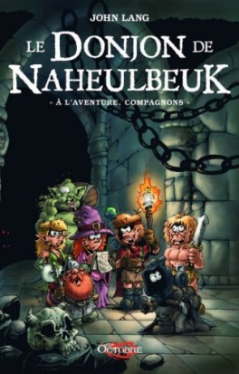
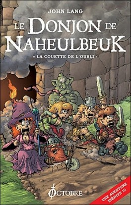
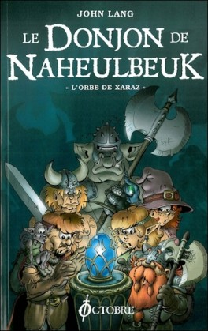
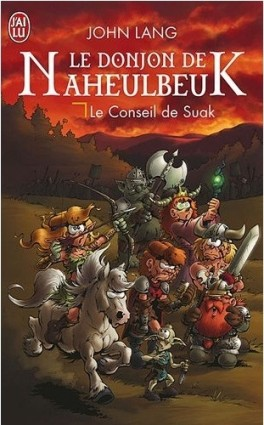
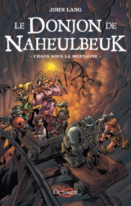

Une aventure de ratés: Le Donjon de Naheulbeuk
Re-bonsoir voyageur ! Je vois que tu as fait un excellent choix. Le Donjon de Naheulbeuk est une excellent série, ses protagonistes ne sont qu'une bande de broc, de bric et de bras cassés.
Le Donjon de Naheulbeuk, qu'est-ce que c'est ?
Le Donjon de Naheulbeuk est une saga MP3 créée en par John « Pen of chaos » Lang et diffusée gratuitement sur Internet. Considérée comme la pionnière des feuilletons audio sur internet, elle est par la suite transposée en bandes dessinées et en romans. « Un délire Internet » devenu « phénomène de librairie », selon l’analyse du Point.
La saga narre les péripéties d'une compagnie d'aventuriers débutants, constituée d'un ranger, d'un nain, d'une elfe, d'un voleur, d'une magicienne, d'un ogre et d'un barbare, initialement partis dans un donjon, le donjon de Naheulbeuk, afin d'y voler une relique, une des douze statuettes de Gladeulfeurha.
La première saison a demandé plus de deux ans de travail pour un résultat de 15 épisodes de 4 à 10 minutes chacun, ainsi que diverses publicités parodiques. Outre le fait que cette saga adopte un mode de diffusion nouveau, l’originalité réside également dans le fait que les auditeurs de cette saga ont influencé son développement à travers une communauté de fans très active.
L’auteur s’est inspiré des Deux minutes du Peuple de François Pérusse pour la conception sonore et de son expérience des jeux de rôle ainsi que des écrits d’Asp Explorer (Les Merveilleuses Aventures de Kalon) pour l’histoire.
Après deux saisons sous forme d’épisodes audio téléchargeables gratuitement, la suite des aventures est apparue sous forme de romans : la saison 3 est sortie le , intitulée La Couette de l’oubli, et la saison 4 est sortie le sous le nom L’Orbe de Xaraz. Une cinquième saison, intitulée le Conseil de Suak a été publiée le . La sixième et dernière saison Chaos sous la montagne est sortie en roman le .
Aujourd'hui la saga continue encore via des BD ainsi que des jeux de rôles. [A REMPLIR]
Une des forces du genre: Les personnages
Le monde et les personnages de cette saga sont des caricatures archétypiques des univers héroïques fantastiques issus des jeux de rôle. Les héros n’ont pas de nom connu, malgré quelques surnoms émergeant durant l'aventure et ne révélant en rien leur appellation d'origine ; ils sont, de manière générale, nommés par leur classe de personnage ou leur race, et évoluent dans la Terre de Fangh. Les personnages historiques sont souvent des versions parodiques des personnages d’autres univers de fiction, comme ceux du Seigneur des anneaux (Saroulemale ; le cousin de l’Elfe, Legolas) ou l’univers de Warhammer (les dieux du chaos, notamment), et aussi d’anciennes légendes (comme Dame Dullak, inspirée de la Dame du Lac des légendes arthuriennes).
Les récits du Donjon de Naheulbeuk se concentrent sur une compagnie d'anti-héros maladroits. Au total, ils sont au nombre de dix mais la compagnie qu’ils forment ne contient à aucun moment plus de sept membres. Durant la première saison la mort d'un personnage présent depuis le début peut survenir à tout moment. Ce n'est plus vrai ensuite, les personnages présents depuis le début de la saison 1 survivent à toutes les péripéties qui suivent. Au départ ces héros n'ont pas de nom, partant du principe que les personnages principaux se reconnaissent facilement en nommant seulement leur classe. Dans les campagnes suivantes, différentes circonstances évitent de révéler leur vrai nom : l'elfe devenue reine reçoit le même nom de règne que ses prédécesseures, le barbare donne un faux nom par paranoïa, le ranger reçoit le surnom « commandant Bradorc » de ses hommes.
Les romans publiés
| N° | Nom | Date de publication | Couverture |
|---|---|---|---|
| 0 | À l'Aventure, compagnons | 15 Juin 2013 |  |
| 1 | La Couette de l'oubli | 7 octobre 2009 |  |
| 2 | L'Orbe de Xaraz | 9 mars 2011 |  |
| 3 | Le Conseil de Suak | 17 juin 2011 |  |
| 4 | Chaos sous la montagne | 21 novembre 2014 |  |